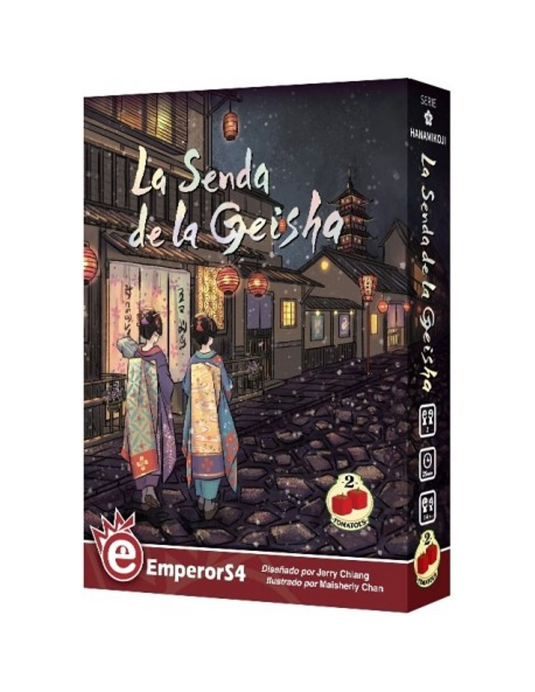
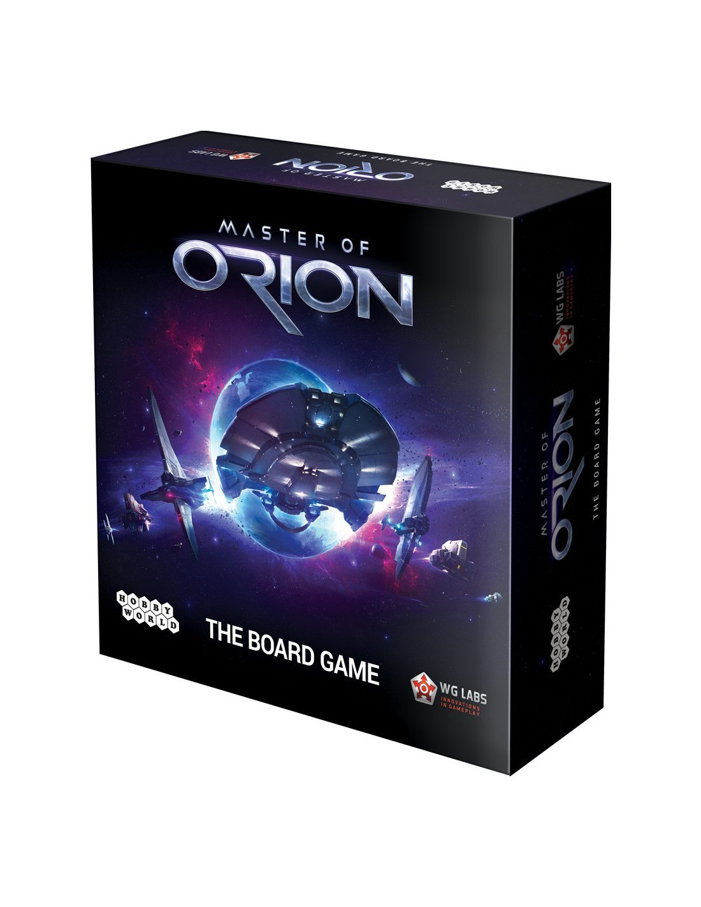

Catan
Catan es un juego de mesa para toda la familia que se ha convertido en un fenómeno mundial.
Desde su aparición en Alemania ha vendido más que muchos de los juegos más tradicionales.
Se trata de un juego que aúna la estrategia, la astucia y la capacidad para negociar y en el que los jugadores tratan de colonizar una isla, Catán,
rica en recursos naturales. Construyendo pueblos, estableciendo rutas comerciales, etc… Catan ha vendido más de 2 millones de ejemplares en Europa y América.
Por si esto no fuera bastante, ha sido galardonado en Alemania y Estados Unidos como Juego del Año.
El juego básico de Catan, a la venta desde hace más de 10 años en España, ha marcado un hito en toda Europa en cuanto a juego de planificación, colaboración y,
por supuesto, diversión. No hace falta comentar que es la única pieza indispensable de Catan en tu ludoteca.
A partir del básico se abre todo el abanico de expansiones que la isla de Catán te ofrece.
Precio: $34.990 Descuento: Sí/No

Hanamikoji: La Senda de la Geisha
Lleno de intenciones implícitas, mensajes velados y acciones ocultas, los jugadores representan patrocinadores rivales pero amigables que apoyan a Yoko, Tomoyo y otros a lo largo de su viaje desde aprendiz (maiko) a la geisha completa (artista) y quizás incluso al dueño (okaasan) de su propio establecimiento.
Contenido:
21 Cartas
20 Cartas de Objeto
Carta de Prestigio
5 Cartas de Casa de Té
5 Figuras de Geisha
8 Fichas de Acción
4 Fichas para Ofertas
9 Fichas de Linterna
5 Fichas de Puntuación
5 Fichas de Desempate
15 Fichas de Invitado
Marcador de Jugador Inicial
Reglamento
Precio: $24.990 Descuento: Sí/No

Master of Orion: El Juego de Mesa
Los destinos de los Darloks, Psilons, los seres humanos y muchos otros dependerán de tus acciones.
Los jugadores administrarán sus recursos con habilidad y sabiduría y deberán dirigir el desarrollo de su carrera elegida en la dirección correcta.
Puedes progresar por medios militares, entrenando a tus espías y atacando planetas alienígenas, o eligiendo el camino de la creación, controlando el clima y construyendo flotas espaciales.
Contenido:
90 Cartas de estructuras
8 Cartas de consejeros
6 Tablillas de civilización
60 Cubos de madera
16 Fichas
Tablero de puntuación
Reglamento
Precio: $19.990 Descuento: Sí/No